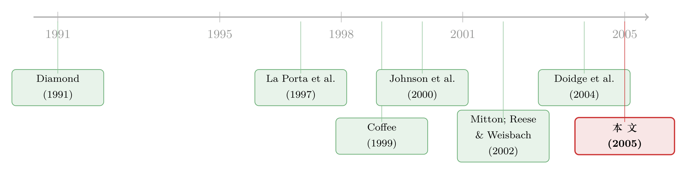

租来的法律：把股票挂到纽约，真能管住自家的老板吗？
本文读的是 Siegel (2005, Journal of Financial Economics)：一家新兴市场公司把股票挂到纽约、声称要「服从美国证券法」，并不能真的吓住想掏空公司的内部人——因为美国证监会（SEC）几乎从不对外国发行人执法。真正起作用的，不是「租来的法律」，而是熬过一场危机后攒下的声誉。
1 一个听上去太美的故事
先讲一个在公司治理文献里流传了很多年的好故事。
一个国家如果法律孱弱——小股东得不到保护、大股东可以肆无忌惮地掏空公司——那么这个国家的股票市场往往很小、上市公司很少、估值很低、分红很吝啬。这几乎是 La Porta、Lopez-de-Silanes、Shleifer、Vishny（下称 LLSV）那一系列「法与金融」研究反复确认的事实（La Porta et al., 1997, 2000）。问题是，一国的法律体系一旦定型，想改极难（Roe, 1996）。那弱国的好公司岂不是只能认命？
不。有人提出了一条绕过去的捷径，叫做功能趋同假说 (functional convergence hypothesis)，最系统的阐述来自法学家 Coffee（1999, 2002）。它的逻辑漂亮得让人心动：一家外国公司，哪怕本国法律再烂，只要把股份挂到纽约——直接上市，或者通过美国存托凭证 (American Depositary Receipt, ADR)——它就自动套上了美国证券法这身「紧身衣」。从此它要遵守美国的信息披露规则、反欺诈条款、要约收购程序；它的内部人一旦在世界任何地方撒谎，都要在美国法庭上承担责任。
换句话说，公司可以「租用」(rent) 一套自己国家给不了的法律。Coffee 把这叫做「绑定 (bonding)」：通过自缚手脚，向投资者作出可信承诺。Stulz（1999）、Fuerst（1998）从代理理论出发，也预测美国的法律能保护这些外国公司的小股东。
这个故事太顺了，顺到几乎没人去问一句：这身紧身衣，真的穿得上吗？
本文做的，就是把这个问题摆到桌面上，用一个近乎完美的实验场——1994 年的墨西哥——把它从头到尾地验一遍。
（关于跨境上市这条线，本博客还读过两篇相关的：《把股票挂到美国去，交易真的会跟过去吗？》 和 《把股票挂到国外去，竟是一道防收购的「护城河」》。）
2 把假说拆成两半
要检验「绑定」，首先得把 Coffee 的论断拆开。它其实包含两个独立的、都必须成立的环节。
第一半：威慑。 美国法律真的能事前吓阻外国内部人作恶。
第二半：执法。 即便有人作了恶，SEC 和美国的司法体系真的会去惩罚这些外国公司和它们的内部人。
只有这两半都成立，「租来的法律」才算真的有用。而要检验它们，你需要一个特别的场景——一场危机。
这里要引出一个关键的理论直觉，来自 Johnson、Boone、Breach、Friedman（2000）那篇关于亚洲金融危机的论文。他们的模型说：控股的老板手里永远握着一个选择——把公司的资源（包括外部投资者投进来的钱）投向生产性投资，还是干脆偷走。平时经济好，投资的回报高，老板没必要偷；可一旦本国陷入经济下行，投资的私人回报骤降，把钱搬到海外账户的相对诱惑反而上升。按照这个模型，只有法律惩罚才能阻止这种侵占。
于是逻辑链就闭合了：如果绑定假说成立，那么在一场新兴市场危机中，已经挂牌发行 ADR、自缚于美国法律之下的公司，它们的内部人不应该大规模掏空公司。
接着，一个自然的问题是：去哪里找这样一场危机？
3 为什么偏偏是墨西哥
作者给出了三个理由，每一个都直指识别的命门。
第一，墨西哥下注最大。 到 1994 年，墨西哥是所有新兴市场中尝试「法律绑定」策略公司数最多的国家，这些公司累计在海外募资超过 USD$6 billion。同时墨西哥又恰恰是 LLSV（1998）笔下股东与债权人权利、整体执法质量都排在末位的那类国家——而功能趋同假说宣称，正是这种弱法治的国家最该从跨境上市中获益。把最该获益的样本拿来检验，再合适不过。
第二，危机是常态而非例外。 1994 年底，墨西哥政府陷入支付危机、向克林顿政府求援。作者特意强调：这在新兴市场里一点都不稀奇。Park and Lee（2001）统计了 1970–1997 年间的 239 场危机（其中 160 场是独立危机），全部发生在发展中国家。如果绑定意味着在好年景里什么都好，到了下行期却保护不了投资者免于血本无归，那这种绑定一文不值。
第三，也是最关键的——这个样本几乎没有样本选择偏差。 这是全文识别的灵魂。作者担心的是：会不会是「本来就更好的公司」才去发 ADR？如果是，那 ADR 公司表现好就跟绑定无关，纯属自选择。于是他做了一件笨而硬的事：拿政治关系、出口导向、杠杆率、规模、危机前是否已有外部融资……一长串可能的工具变量，逐一去预测「哪些墨西哥公司在 1994–1995 危机前选择了跨境上市」。结果是——没有任何一个变量有解释力。
这个「测不出来」恰恰是好消息。1990 年前后，跨境上市对墨西哥公司还是个成本收益都不确定的新事物，谁去谁不去近乎随机。这也解释了为什么此前的 ADR 文献从来没能系统地识别出「谁会跨境上市」的决定因素——不是大家不努力，而是大多数你能想到的工具变量本身就直接影响后续业绩，因而无效。
更妙的是一个反转：与「最优质公司才上市」（Doidge et al., 2004）的主流叙事相反，本文发现，墨西哥那些跨境上市、且没卷入丑闻的公司，按 ROA 和市值创造衡量，未必是质量最高的。它们真正与众不同的一点，是上市后募到的外部流动性资本特别多（Lins et al., 2004 也指出了这一特征）。而正是这「一大笔钱」，在缺乏美国执法的环境里，埋下了一个道德风险 (moral hazard) 的雷。
4 数据：一份硬啃出来的手工数据库
本文的数据不是从 CRSP、Compustat 里下载的，而是一行一行手工建起来的。
样本是 1994 年 9 月之前在墨西哥证券交易所（Mexico Stock Exchange, MSE）挂牌的全部墨西哥公司，共 183 家。其中 125 家没有任何 ADR，58 家有 ADR；后者里 23 家是挂牌 ADR（listed，须遵守较严的美国披露与反欺诈规则），35 家是非挂牌 ADR（unlisted）。
观测的时间窗也设计得很讲究。危机的剧烈期始于 1994 年 9 月 30 日——这天 MSE 的 IPC 指数结束盘整、开始急跌（Mitton, 2002 用过类似的危机起点定义法）。作者统计 1995 年 1 月 1 日至 1999 年 12 月 31 日间，公司的主导股东是否进行了（或被指控进行了）非法或合法的资产侵占；又一路追踪到 2002 年 6 月 30 日，看 SEC 是否采取了任何行动。这意味着 SEC 有七年多的时间去出手。
核心变量是一组虚拟变量：
- 非法资产侵占且潜逃 (illegal asset taking and fled Mexico)：控股股东/高管被指控盗窃、欺诈或侵占，且被公开证实逃离墨西哥至少一年；
- 被指控任何类型的资产侵占；
- 合法资产侵占 (legal asset taking)：墨西哥法律没有明确禁止、也不会被一致惩罚的「掏空」，比如公司向控股股东私人实体的秘密贷款、或大笔资金从资产负债表上凭空消失的「严重财务失当」；
- 危机后五年内是否从公开股、债或银团贷款市场拿到了新钱，以及拿到了多少（取对数）。
侵占的指控几乎都经过外部股东、交易所官员、政府、执法、分析师与记者的多方交叉印证——这些丑闻大多是在光天化日之下发生的：内部人一边洗劫公司、一边逃出国门（有些就藏在美国）。
5 反转：紧身衣穿反了
现在把数据摊开，看绑定假说的第一半——威慑。
如果美国法律能事前吓阻作恶，那么有 ADR 的公司，内部人侵占的概率应该更低。结果呢？正好相反。
按 ADR 类型分组的单变量统计触目惊心。被指控任何类型资产侵占的比例：无 ADR 公司是 0.07，有 ADR 公司却高达 0.26；被指控非法侵占的比例，无 ADR 是 0.03，有 ADR 是 0.14；被指控合法侵占的，无 ADR 是 0.06，有 ADR 是 0.24。也就是说，套上了美国法律紧身衣的公司，反而在危机中更频繁地被指控掏空。
这并不是说 ADR「导致」了人变坏，而是前面那个伏笔的兑现：跨境上市让这些公司募到了一大笔外部流动性资本，而美国执法又形同虚设，于是危机一来，更多的钱、更弱的约束，反而抬高了道德风险的边际概率。绑定假说预言的威慑，不但没出现，符号还反了。
注意这里对内生性的巧妙处理。通常我们担心「好公司自选择上市」会高估绑定的好处。但本文的发现是：跨境上市增加了侵占概率。这个方向的内生性，对作者的核心结论反而是「保护性」的——因为它说明，即使存在某种自选择，也没法解释为什么 ADR 公司表现得更糟。
再看第二半——执法。这是全文最冷峻的一节。作者翻查了 SEC 七十年对所有在美上市外国公司的执法记录，结论是：SEC 几乎从未能对任何一家在美上市的外国公司成功执法。小股东倒是常常试图用美国法院去起诉这些跨境上市的外国公司，但制度性的障碍重重，他们往往被迫接受象征性的和解（token settlements）。那些真正该为治理滥权负责的内部人，极少被迫向股东支付任何有分量的赔偿。小股东通常只能拿回公司在丑闻前买的那点保险，再无其他。
而这种「逍遥法外」一旦人尽皆知，又进一步放大了道德风险——下一个想掏空公司的老板，看到的是一条没有惩罚的路。
绑定假说的两半，就这样双双落空。
6 那么，到底是什么在起作用？
读到这里，张力达到了顶点：跨境上市的市场明明在飞速增长（今天超过 15% 的纽交所上市公司注册在海外），如果法律绑定根本不灵，这个市场凭什么繁荣？
这就是本文最漂亮的一步：把解释从法律绑定换成声誉绑定 (reputational bonding)。
即便没有有效的执法，跨境上市带来的自愿披露和随之而来的市场关注，本身就能让一批公司通过「建立声誉」来实现自我绑定。本文最终给出的画面是：一种声誉机制，把资源源源不断地导向了那一小群在艰难岁月里始终守规矩的墨西哥公司。
数据支持这个故事。看危机后五年能否拿到新钱：无 ADR 公司只有 0.34 的比例拿到了外部融资，有 ADR 的是 0.66，而挂牌 ADR 公司高达 0.78。再看拿到的金额（对数）：无 ADR 是 2.60，有 ADR 是 5.51，挂牌 ADR 更达到 6.65。
关键在于：这笔「奖励」并不是给「上了市」这个动作的，而是给那些上了市、又干净地熬过了经济下行、保住了清白名声的公司的。声誉是熬出来的，不是租来的。创造一项声誉资产的前景，能让许多（但不是全部）公司去遵守那些它们本不被强制遵守的规则——「many, but not all」，这五个字是全文的题眼。
这条思路其实有深厚的理论根基：Diamond（1991）讲银行贷款与直接发债之间的声誉选择，Gomes（2000）讲不靠治理、单凭经理人声誉也能上市，Karpoff and Lott（1993）量过欺诈给公司带来的声誉惩罚，Banerjee and Duflo（2000）在印度软件业里见过声誉如何替代不完全的合约。本文把这套「声誉替代法律」的逻辑，搬到了跨境上市的战场上。
7 文献脉络
把这条线捋一遍，能更清楚地看到本文站在哪里。
起点是 LLSV 的「法与金融」纲领（La Porta et al., 1997, 2000, 2002）：法律保护决定了外部融资的规模与公司估值，弱法治是发展的枷锁。转折来自 Coffee（1999, 2002）的功能趋同假说——既然改不动本国的法律，那就去租美国的，跨境上市成了一剂绕过制度短板的解药。实证的第一波随即跟上：Reese and Weisbach（2002）发现来自大陆法系国家的公司比普通法国家的公司更可能赴美上市、且上市后两年内更易吸引外部融资；Mitton（2002）第一个在亚洲危机中检验 ADR 的绑定作用，发现危机中有 ADR 的公司估值更高；Doidge、Karolyi、Stulz（2004）则给出了那个著名的「跨境上市溢价」。

而本文是这条线上的「冷水」。 它不否认跨境上市有用，但它把「为什么有用」从法律绑定掰向了声誉绑定，并用 SEC 七十年的执法空白与墨西哥危机中的侵占证据，给前一种解释判了死刑。它的智识同盟，是 Licht（2000, 2003）和 Fanto（1996）那些早就警告「美国披露要求形同虚设、经理人机会主义会钻执法空子」的怀疑论者；而它的理论弹药，则来自 Johnson et al.（2000）的掏空模型与 Diamond（1991）以降的声誉文献。
8 评论与延伸（Q&A + 研究方向）
(a) 几个可能的疑问
Q：合法侵占和非法侵占，区别到底在哪？
非法侵占是触犯了墨西哥刑法、且当事人被指控盗窃/欺诈/侵占并潜逃；合法侵占则是法律没有明确禁止、也不会被一致惩罚的掏空，比如向控股股东的私人公司发放秘密贷款、或大笔资金从报表上「蒸发」的财务失当。前者是明抢，后者是钻空子——但对小股东而言，钱一样没了。
Q：ADR 公司侵占比例更高，会不会只是因为它们规模更大、更受关注，所以更容易「被发现并被报道」？
这是个真问题。本文的指控来自多方交叉印证、且多发生在公开视野下（内部人洗劫公司后逃离国门），一定程度上缓解了「只是更受关注」的担忧。但「曝光概率随关注度上升」这条渠道，文中并没有用一个正式的检验彻底排除，仍是结论的一个软肋。
Q：既然怀疑「好公司才上市」的自选择，作者凭什么说自己干净？
两道防线。其一，他用政治关系、出口、杠杆、规模、危机前融资等一长串候选工具去预测「谁上市」，全都没有解释力，说明上市近乎随机；其二，即便残留自选择，它的方向是「上市增加了侵占概率」，这与「好公司上市」的偏差方向相反，因此无法解释 ADR 公司表现更糟。
Q：那跨境上市到底还有没有用？本文是不是在全盘否定？
不是。本文不否认跨境上市能帮公司融资、提升估值，它否认的是法律绑定这条因果机制。它主张真正起作用的是声誉绑定——上市带来披露与关注，干净地熬过危机的公司因此攒下声誉、赢得后续的廉价资本。是机制之争，不是有用与否之争。
Q：墨西哥一国的结论，能推广到别的新兴市场吗？
作者论证墨西哥的危机是「典型」而非「极端」（Park and Lee, 2001 的 239 场危机佐证），且墨西哥下注最大、法治最弱、最该获益，因此是个对绑定假说「最有利」的检验场——连这里都不灵，外推的底气就更足。但单国样本、
183家公司、危机后五年窗口，统计功效与外部效度终究有限。
Q：「合法侵占」既然不违法，美国证券法本来就管不着，拿它来否定法律绑定公平吗？
部分公平、部分不公平。对非法侵占，美国法律理论上该管却没管，是对绑定假说的直接证伪；对合法侵占，它揭示的是另一层问题——大量掏空根本游走在法律定义之外，再强的执法也够不着，这恰好说明「靠法律绑定」从设计上就有盲区，反衬声誉机制的价值。
(b) 几个可能的研究问题与提案
1. 把「声誉绑定」搬进公司债与信用市场
【经济故事】本文的声誉机制全部建在股权融资上。但债权人对掏空更敏感——他们拿的是固定索取权，下行期被侵占的损失更直接。一个自然的问题是：跨境上市（或发行美元债、接受国际评级）带来的声誉，是否压低了新兴市场公司的信用利差，尤其在危机熬过之后？ 【可行性】中。需要新兴市场公司债的发行与二级市场利差数据（如 EMBI、Bloomberg、Refinitiv）、ADR/跨境上市标记、以及一次可识别的危机。识别可借鉴本文：比较「干净熬过危机 vs 卷入丑闻」的公司其后发债成本的分化。难点在于债券样本在弱法治国家往往稀薄。
2. SEC 执法空白的「断点」实验
【经济故事】挂牌 ADR（listed）须遵守严格披露与反欺诈条款，非挂牌 ADR（unlisted）则宽松得多。本文已显示二者在融资结果上差异巨大（0.78 vs 0.57）。若能找到一条监管门槛（比如某规则只对超过某市值/股东数的发行人生效），就能用断点回归把「美国披露义务」的因果效应干净地切出来。 【可行性】中。需要逐家公司的 ADR 层级、披露义务触发条件与后续融资/侵占数据。挑战在于门槛是否足够锐利、是否存在操纵性「扎堆」。
3. 外资持有人是声誉的「记账员」吗？
【经济故事】声誉要起作用，得有人持续盯着、并据此重新配置资本。一个推论是：危机后给「干净公司」奖励廉价资本的，主要是外国机构投资者而非本土资金。换句话说，是外资在替市场记声誉的账。 【可行性】中高。可用 ADR 持仓、13F、跨境基金持仓数据，看危机后增持是否集中流向「无丑闻」的跨境上市公司。识别上可结合本文的近随机上市设定。这与本博客读过的 《外资真是「蝗虫」吗？》 在「外资长期效应」这一点上正好对话。
4. 量化「合法掏空」的规模
【经济故事】本文坦承，因为很多案子仍在审理、缺乏足够精确的数字，它只能用「是否发生」的二值变量，而非连续的「被掏走多少」。但若能像 《拍卖桌上量出来的「掏空」》 那样，从大宗股权交易的折价里结构化地反推控制权私利，就能把「合法侵占」的真实金额估出来。 【可行性】低到中。需要墨西哥（或同类市场）的大宗股权交易价格与少数股权市价，样本稀少且交易不透明是主要障碍。
我的判断
这是一篇「以小博大」的范本。它没有炫目的计量，核心证据甚至只是分组均值的对比，但它把一个流行了多年的漂亮假说，按在墨西哥这个最该让它成立的样本上，用 SEC 七十年的执法空白和危机中反向的侵占模式，干净利落地证伪了「法律绑定」这一环，再顺势把解释让渡给声誉。叙事的张力和反转都极好。
要说对识别的担忧，我有两点。其一，侵占的「被发现概率」与公司可见度、ADR 状态可能正相关，本文虽以「公开视野下的掏空」缓解，但没有一个正式检验把它彻底关掉——这是结论最脆弱的接缝。其二，单国、183 家公司、二值化的侵占度量，使得很多对比停留在描述性层面，难以给出带 t 值的因果系数；「声誉绑定优于法律绑定」更多是被叙事和均值差异说服，而非被一个干净的反事实证明。
我接下来最想看到的，是把这套逻辑放进信用市场和多国面板：如果声誉真的是那个隐形的记账本，那它应该同时压低危机幸存者的股权成本与债务成本，并且这种奖励应该主要来自盯得最紧的那批外国持有人。谁在记账、记的是谁的账——这才是「声誉绑定」从一个动人的故事，走向一个可证伪的机制的下一步。
参考文献
- Banerjee, A., Duflo, E. (2000). Reputation effects and the limits of contracting: a study of the Indian software industry. Quarterly Journal of Economics 115, 989–1018.
- Coffee Jr., J. (1999). The future as history: the prospects for global convergence in corporate governance and its implications. Northwestern Law Review 93, 641–707.
- Coffee Jr., J. (2002). Racing towards the top?: the impact of cross-listings and stock market competition on international corporate governance. Columbia Law Review 102, 1757–1831.
- Diamond, D. (1991). Monitoring and reputation: the choice between bank loans and directly placed debt. Journal of Political Economy 99, 689–721.
- Doidge, C., Karolyi, K., Stulz, R. (2004). Why are foreign firms listed in the U.S. worth more? Journal of Financial Economics 71, 205–238.
- Fanto, J. (1996). The absence of cross-cultural communication: SEC mandatory disclosure and foreign corporate governance. Journal of International Law and Business 17, 119–207.
- Gomes, A. (2000). Going public without governance: managerial reputation effects. Journal of Finance 55, 615–646.
- Johnson, S., Boone, P., Breach, A., Friedman, E. (2000). Corporate governance in the Asian financial crisis, 1997–98. Journal of Financial Economics 58, 141–186.
- Karpoff, J., Lott Jr., J. (1993). The reputational penalty firms bear from committing criminal fraud. Journal of Law and Economics 36, 757–802.
- La Porta, R., Lopez-de-Silanes, F., Shleifer, A., Vishny, R. (1997). Legal determinants of external finance. Journal of Finance 52, 1131–1150.
- La Porta, R., Lopez-de-Silanes, F., Shleifer, A., Vishny, R. (2000). Investor protection and corporate governance. Journal of Financial Economics 58, 3–27.
- Lins, K., Strickland, D., Zenner, M. (2004). Do foreign firms issue equity on U.S. stock exchanges to relax capital constraints? Journal of Financial and Quantitative Analysis, forthcoming.
- Mitton, T. (2002). A cross-firm analysis of the impact of corporate governance on the East Asian financial crisis. Journal of Financial Economics 64, 215–241.
- Park, Y., Lee, J. (2001). Recovery and sustainability in East Asia. NBER Working Paper 8373.
- Reese Jr., W., Weisbach, M. (2002). Protection of minority shareholder interests, cross-listings in the United States, and subsequent equity offerings. Journal of Financial Economics 66, 65–104.
- Siegel, J. (2005). Can foreign firms bond themselves effectively by renting U.S. securities laws? Journal of Financial Economics 75(2), 319–359.
- Stulz, R. (1999). Globalization of equity markets and the cost of capital. Journal of Applied Corporate Finance 12, 8–25.